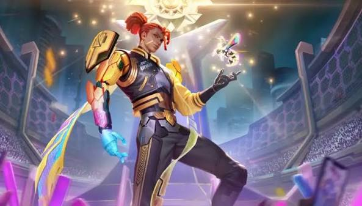

“ Mysterious man whose right hand was corroded and who lost his memory ” Brody lost his memory and wandered aimlessly between the villages of the Barren Lands, but there was always a voice in his heart asking him to hunt the Demons. In countless battles, Brody gradually recalled his past. Once, because of his mistakes, his village was massacred by the Demons and his right hand was also corroded. Now he understands his mission, in order to protect the people around him, Brody will always be fighting in a foreign land. Lore No one knew where Brody came from. When he first arrived at this village, he was covered in blood and his right hand seemed to be corroded by the abyss. You could tell from his gloomy face he was lost. The kind villagers didn't dare let him into the village, so they put some water and food next to him instead. After he awoke, Brody realized that the villagers were scared of him. He had forgotten everything, only faint memories would flash through his mind from time to time. In the dream that he had over and over again, someone cried out to him: "Brody, hurry!" But hurry for what? He did not know the answer. In his faint memories, there was always a great fire. And his right hand… looked quite ordinary at the time. So what happened to it? Every time he tried to recall the past, Brody would feel an intense headache. He didn't know his purpose. He wandered the lands aimlessly. The torn-apart memories and the pain from his right arm were constantly torturing him.
Fun Fact: Brody (The Lone Star) is the only Marksman in Mobile Legends: Bang Bang who can move while winding up his Basic Attacks. Unlike traditional heroes who stand still to shoot, he levitates and glides across the map while attacking, at the cost of the slowest base attack speed in his class.